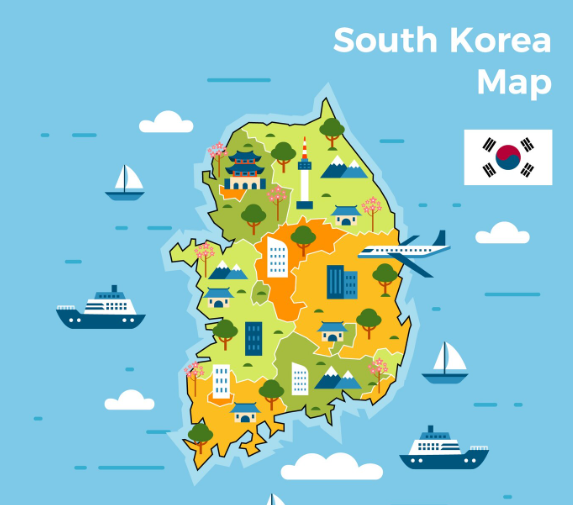

전국 지역별 맞춤 축제 탐색 & API 장애 복원형 관광 대시보드
현재 API 통신에 일시적인 장애가 발생했으나, 마지막 정상 수집된 데이터를 안전하게 보존하여 표시 중입니다.
지도의 권역 핀을 누르거나 우측 지역 버튼을 선택하여 축제를 확인하세요.

원하는 축제 카드를 클릭하면 상세 일정, 남은 D-Day, 위치 정보가 펼쳐집니다.
날짜별 수집 기록을 분석하여 등록·수정·종료 및 D-Day 변화를 구분합니다.
API 장애가 발생해도 화면의 마지막 정상 데이터가 파괴되지 않고 보존되는지 검증합니다.
버튼을 클릭하여 5가지 API 오류 상황을 테스트해 보세요. 오류가 발생해도 축제 목록이 사라지지 않고 유지됩니다.
실제 API 호출 성공/실패 여부와 날짜별 스냅샷 기록입니다.
2026년 11월 15일 개막 예정입니다.